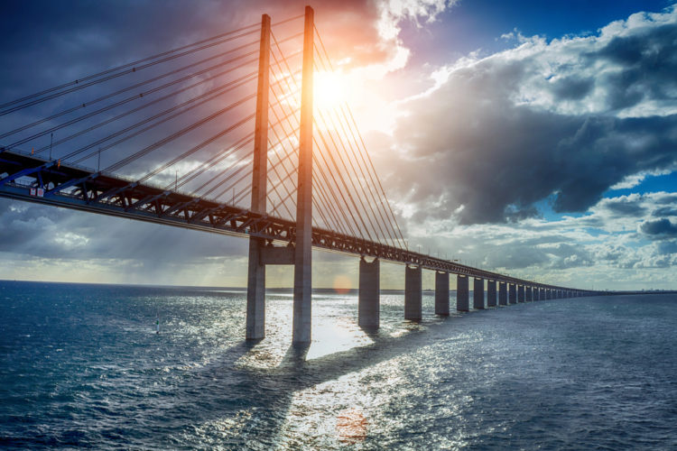
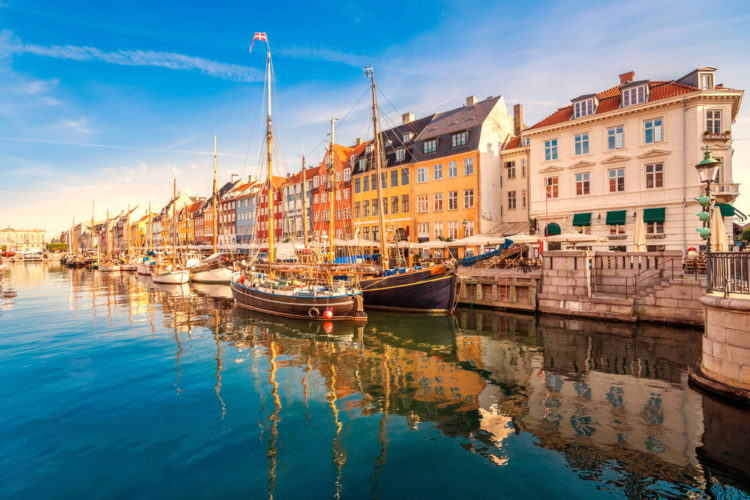
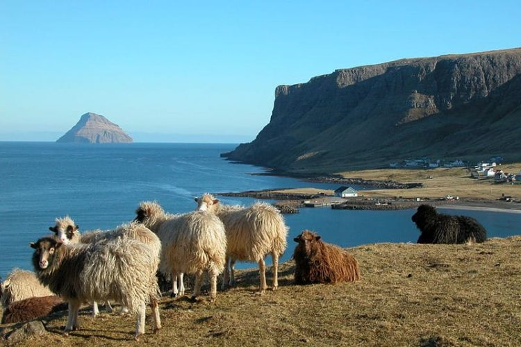
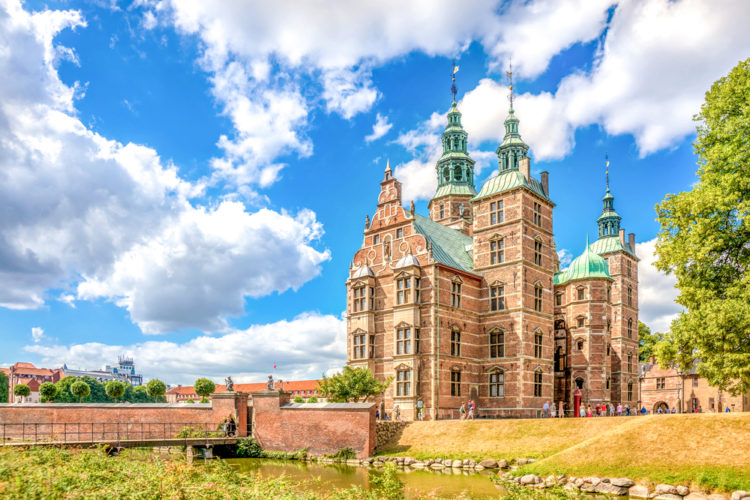

Страны мечты Страны мечты Страны мечты Страны мечты Страны мечты
| Главная | Дания | Норвегия | Финляндии | Швеция | Источники |
|---|
| Этимология | История | Георграфия и климат | Достопримечательности |
|---|
Этимология названия «Дания» (дат. Danmark) до настоящего времени остаётся предметом дискуссий. Самое раннее упоминание о территории под названием «Дания» встречается в труде историка и теолога Павла Орозия «Семь книг истории против язычников» (IX век). В свою очередь, первое записанное использование слова «Дания» внутри самой Дании находится на рунических камнях в Еллинге, которые, как полагают, были установлены королями Гормом Старым и его сыном Харальдом Синезубым в X веке. С XIV века Дания объединилась с Норвегией, новое государственное образование получило название Датско-норвежская уния, и лишь с 1814 года страна носит современное название — Дания (официально — «Королевство Дания»).
Существует несколько версий заселения современной территории Дании. По одной из них племена данов прибыли на эти земли с южной части Скандинавии, по другой северную часть Ютландии стали осваивать те же даны, двигающиеся с юга полуострова.
Так или иначе, но уже в 5-6 столетиях у данов существовало собственное государство викингов. Оно состояло из родовой знати, военной элиты, которой являлись викинги, и крестьян.
К 9 веку даны, или как их называли по-другому норманны, начали свои походы по различным землям, держа в страхе перед своим появлением целый континент. В частности они основали герцогство Нормандия на территории современной Франции, осваивали Англию, Норвегию и Эстонию. Тем не менее, кроме военных походов, викинги активно торговали, что способствовало укреплению экономического могущества их страны.
Периоды различных походов поспособствовали проникновению в страну миссионеров. Именно они принесли в Данию христианство. В стране началось активное возведение божьих храмов и монастырей. Все это привело к тому, что датский король Харальд Синезубый в 965 году принял сам крещение и крестил всех своих подданных.
Уже к 1047 году страна имела разделения на 8 епархий, в каждой из которых правил епископ. Вторая половина 11 века оказалась для Дании мирной. В этот период католическая церковь усиливает свое влияние.
С наступлением 13 столетия в Дании королем Вальдемаром I осуществляются внушительные преобразования. В 1241 году принимается свод законов, получивший название «Ютландская правда». Проведена первая поземельная опись, которая поспособствовала точному установлению всех принадлежавших королевству земель.
В 1332 году в Дании вспыхивает междоусобная война, длившаяся 8 лет. Все это время страна фактически существовала без своего короля. Однако Вальдемар II берет власть в свои руки и к 1340 году восстанавливает монархию.
Пройдет 57 лет и крепнувшая Дания, руководимая королевой Маргарет, объединит под своей эгидой Швецию, Норвегию, Исландию и Финляндию. Однако союз оказался недолог, и первой ее покинула Швеция.
В 16 столетии на территорию Дании начали проникать идеи Реформации. Они не пришлись по душе монархическим и знатным особам, зато нашли отклик среди простолюдинов. Начался этап борьбы католической и протестантской церквей. Во время правления Христиана III в Дании лютеранство превратилось в государственную религию.
Период нахождения у власти следующего короля Христиана IV принято считать «золотым датским веком». При этом монархе в Дании активно развивается строительство замков и крепостей, возведенных в стиле северного ренессанса. Появляется первая европейская обсерватория, развивается культура, основаны Вест-Индская и Ост-Индская датские компании. Обновления и модернизация затронули как торговый, так и военный флоты.
Такие две мощные державы как Дания и Швеция не могли мирно и долго уживаться друг рядом с другом. Они несколько раз воевали за сферу влияния над Балтийским регионом.
Первый военный конфликт разразился в середине 16 столетия и окончился заключением Штеттинского мира, подписанного в 1570 году. Следующее столкновение не заставило себя долго ждать и началось в 1611 году. Эта война Данией была проиграна. В результате она потеряла все свои скандинавские владения.
Со второй половины 17 века Дания активно участвовала в конфликтах локального характера в северной Европе. Авторитет Швеции возрастал, а Дания, наоборот, теряла свое могущество. В 1679 году поддерживаемая Францией Швеция вынудила датского короля подписать мир, отменявший все притязательства Дании на Скандинавию.
В период наполеоновской экспансии на континенте Дания оказалась втянутой в войны Франции и ее союзников против всех европейских стран. Это пагубно сказалось на ее экономическом благополучии и привело к значительным человеческим потерям. Еще одним негативным моментом стала утеря Данией Норвегии, отошедшей в сферу влияния Швеции.
В 19 столетии в Дании наблюдалось снижение власти монарха. Такое положение дел стало причиной принятия в 1849 году новой Конституции, согласно которой королевство превратилось в конституционную монархию с предоставлением широких свобод прессе и религии.
В это же время в королевстве происходили значительные изменения. Дания заняла лидирующие позиции в производстве животноводческой продукции и молочных товаров. Для занятий сельским хозяйством были осушены большие площади земель. Развивалась добыча сахарной свеклы и индустрия пивоварения. Началось бурное строительство железных дорог и развитие судостроения.
Кроме того, произошедшие политические изменения затронули и законодательство в сфере выборов. В Дании начало функционировать социальное законодательство.
Учитывая все это, Дания уверенно встречала наступление 20 столетия в статусе одного из наиболее развитых государств Европы.
К сожалению, первая половина 20 века внесла свои коррективы в развитие Дании. Кризис 1930-х годов ударил по экономике Дании, но она сравнительно быстро смогла вернуть утраченные позиции.
Когда разгорелась Первая мировая, Дания приняла мудрое решение о соблюдении нейтралитета. Это позволило стране мирно развивать свою промышленность и аграрный сектор без резких потрясений.
О своем нейтралитете датчане заявили и с началом агрессии нацисткой Германии на европейские страны. Однако это не уберегло их страну от оккупации. Встав перед выбором сражаться или подчиниться воле фюрера, правительство Дании сложило оружие, и страна попала в сферу влияния Германии, сохранив при этом подобие автономии. Формально Дания была оккупирована немцами вплоть до весны 1945 года.
Экономика Дании смогла преодолеть все последствия самого ужасного конфликта в истории человечества только к концу 1950-х годов. Этому во многом способствовала финансовая помощь из США и успешно проведенные преобразования.
В 1949 году блок НАТО пополнился новым членом. Им оказалась Дания, которая отказалась от традиционно соблюдаемого ею нейтралитета.
В 1960-х годах в стране стала развиваться электроника и нефтехимия. Дания активно сотрудничает со странами Скандинавии, Британией и другими европейскими государствами. В стране все активнее развивается промышленный сектор, превративший ее в индустриально-аграрное государство.
Сегодня Дания полноправный и динамично развивающийся член европейского сообщества с высоким уровнем жизни собственных граждан.
| Месяц | Макс./Мин.(°C) | Дождь |
|---|---|---|
| Январь | 3°/-1° | 10 дней |
| Февраль | 3°/-1° | 6 дней |
| Март | 6°/1° | 9 дней |
| Апрель | 11°/4° | 7 дней |
| Май | 16°/8° | 6 дней |
| Июнь | 20°/12° | 8 дней |
| Июль | 22°/14° | 8 дней |
| Август | 22°/14° | 8 дней |
| Сентябрь | 17°/11° | 10 дней |
| Октябрь | 12°/7° | 9 дней |
| Ноябрь | 7°/4° | 10 дней |
| Декабрь | 5°/1° | 10 дней |
Дания — самая южная из скандинавских стран; расположена к юго-западу от Швеции и к югу от Норвегии, с юга граничит с Германией по суше. Дания омывается Балтийским и Северным морями. Территория страны включает в себя большой полуостров Ютландия и 409 островов Датского архипелага, среди которых наиболее известны такие, как Зеландия, Фюн, Венсюссель-Ти, Лолланн, Фальстер и Борнхольм.
Умеренно-морской, континентальный, влажный и пасмурный, с относительно сильным влиянием океана, а именно теплого течения Гольфстрим. Мягкая ветреная зима и прохладное лето. В январе температура колеблется около 0 °C, в июне — около +18 °C. За год выпадает много осадков: от 600 мм на востоке и до 800 мм на западе. В среднем 120 дней в году в Дании идёт дождь. Наибольшее количество осадков приходится на осень.
Ещё одна важнейшая достопримечательность Дании — Эресуннский мост между датской столицей Копенгаген и шведским городом Мальме, представляет собой грандиозный проект, который начал воплощаться в жизнь в 1995 году. В первую очередь, появлению этого проекта способствовала отмена паспортного контроля и упрощение таможенного контроля между Данией и Швецией. Уже приступив к реализации проекта, рабочие обнаружили в местах установки моста 18 неразорвавшихся снарядов времён второй мировой войны. В процессе возведения моста возникла и ещё одна неожиданная проблема — один из сегментов тоннеля дал перекос вследствие ошибки в инженерных расчётах. Тем не менее, это не помешало, минуя все сложности и ликвидируя все недочёты, к августу 1999 года завершить возведение грандиозного сооружения — моста-тоннеля длиной 7 845 метров, совмещающего в себе двухпутную железную дорогу и четырёхполосную автомобильную магистраль.
Эресуннский мост стал шедевром современной инженерии, вызвав настоящее восхищение своей грандиозностью. Сегодня ежегодно десятки миллионов людей пересекают мост, чтобы попасть в соседнюю страну кратчайшим путём. Таким образом, мост позволил приблизить границы двух государств и значительно сократить время переезда.
Ценители исторических мест, таящих богатую хронику событий, обязательно найдут что посетить в Дании — благо, здесь сосредоточена масса исторических памятников. К их числу можно отнести и район Нюхавн, один из самых ярких и колоритных в Копенгагене. Здесь ещё в 17 веке был прорыт канал, соединяющий город с морем и ведущий от Королевской площади до главного городского порта, а также примерно в это же время было возведено множество ярких зданий с причудливыми остроконечными крышами, сохранившими свой облик до наших дней. В трёх домах из них в разное время жил и творил писатель-сказочник Ганс Христиан Андерсен. Со старинными зданиями перемежаются и уютные ресторанчики, где можно оценить вкус и разнообразие местных блюд. У берегов канала пришвартовано множество старинных деревянных судов. Словом, матросы, корабли и пиво — вот что было неразрывно связано с представлениями об этом районе. И по сей день, особенно в солнечные дни, многие предпочитают здесь провести свой день с пинтой свежего пива.
Зима — идеальное время для путешествия «на край земли», чтобы увидеть северную природу во всём её могуществе и суровости. Задавшись вопросом, что посмотреть в Дании зимой, включите в маршрут посещение Фарерских островов — северного сокровища, которому нередко присваивают статус достопримечательности Исландии, хотя официально эти земли принадлежат Дании. Здесь перед путешественниками разворачивается фантастическая природа в её первозданности, степенная, сдержанная, магическая: это глубокие спокойные озёра, головокружительные фьорды, таинственные ущелья, бурные водопады, прибрежные скалы, дремлющие в туманных облаках. Каждый остров архипелага уникален и сам по себе является достопримечательностью.
В самом центре датской столицы раскинулся старейший парк площадью около 5 гектаров, во главе с важнейшей достопримечательностью Дании — замком Розенборг. Старинное масштабное сооружение располагается в северо-западной части парка и по периметру окружено рвом, заполненным водой. Возведён замок был по распоряжению короля Кристиана IV в 1624 году. Долгое время Розенборг выполнял роль королевской резиденции, и лишь в 1710 году начал использоваться для официальных приёмов, а роль резиденции стал выполнять другой замок, по приказу Фредерика IV построенный в пригороде столицы. В 1838 году двери Розенборга открылись для всех посетителей, здесь были выставлены королевские коллекции и многочисленные предметы, свидетельствующие о периоде с 16 по 19 век.
Парк, в котором расположен замок, именуется Королевский сад — он был создан незадолго до возведения самого замка, поэтому его ландшафт украшают архитектурные элементы в стиле той эпохи - ренессанс. Сейчас парк чрезвычайно популярен среди туристов и привлекает более 2 миллионов посетителей каждый год.

| Главная | Дания | Норвегия | Финляндии | Швеция | Источники |
|---|
Страны мечты Страны мечты Страны мечты Страны мечты Страны мечты